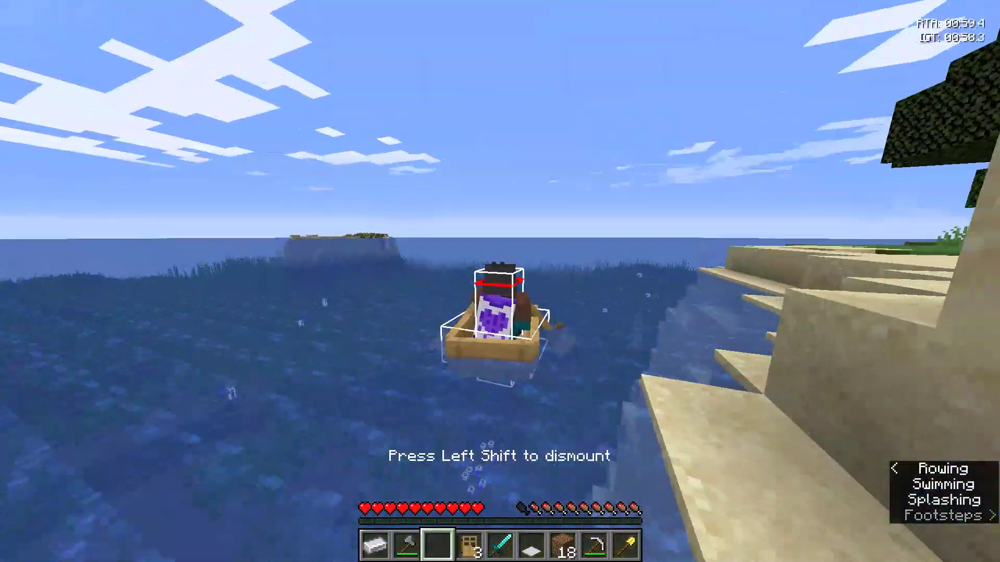

A sandbox world where creativity is the only limit.
Minecraft - Favourite Game

Minecraft Gameplay Screenshot
About Minecraft
Minecraft is a sandbox video game developed by Mojang Studios. It allows players to explore a blocky, procedurally generated 3D world, discover and extract raw materials, craft tools and items, and build structures or earthworks. The game has multiple modes, including survival mode where players must acquire resources to build the world and maintain health, and creative mode where players have unlimited resources to build with and the ability to fly.
Minecraft has become one of the best-selling video games of all time, with a large and active community. It is praised for its creativity, educational value, and the freedom it offers players to create their own worlds.
Why I Like Minecraft
Minecraft is the kind of game that lets you play however you want. You can build, explore, survive, or just experiment and relax. It’s simple on the surface but incredibly deep once you get into it.
My Favorite aspect of minecraft
I am a Minecraft Speedrunner, so I play a more competitive aspect of the game.
The goal is to complete the game as fast as possible, usually by defeating the Ender Dragon.
It requires a lot of skill, strategy, and sometimes a bit of luck. I love the thrill of racing against the clock and trying to improve my times.
Speedrunning Minecraft has taught me a lot about the game’s mechanics and has helped me become a better player overall in other aspect of the game.
I study Minecraft speedrunning like someone studies a sport. My “curriculum” mixes daily practice runs, route planning, and learning the small mechanical optimizations that become huge time savings under pressure.
I focus on consistency first. If I can hit a safe, repeatable time every run, I can start pushing the risky tricks that cut off seconds.
Training sessions usually include warm-up movement drills, segmented routing work (e.g., early-game nether routing or ender pearl optimizations), and recorded full runs for review.
I track mistakes and categorize them — navigation errors, inventory mismanagement, or poor portal timing — then drill those exact moments until they stop happening.
Speedrunning also taught me to make quick decisions with incomplete information. Worlds are random, so planning is only half the job; the other half is adapting when the seed hands you something unexpected.
That mix of planning, execution, and split-second adaptation is what I love about it.
Gameplay Overview
Players start in a randomly generated world made out of blocks. You gather materials, craft tools, build structures, and face mobs like zombies or creepers. The whole world reacts to your creativity.